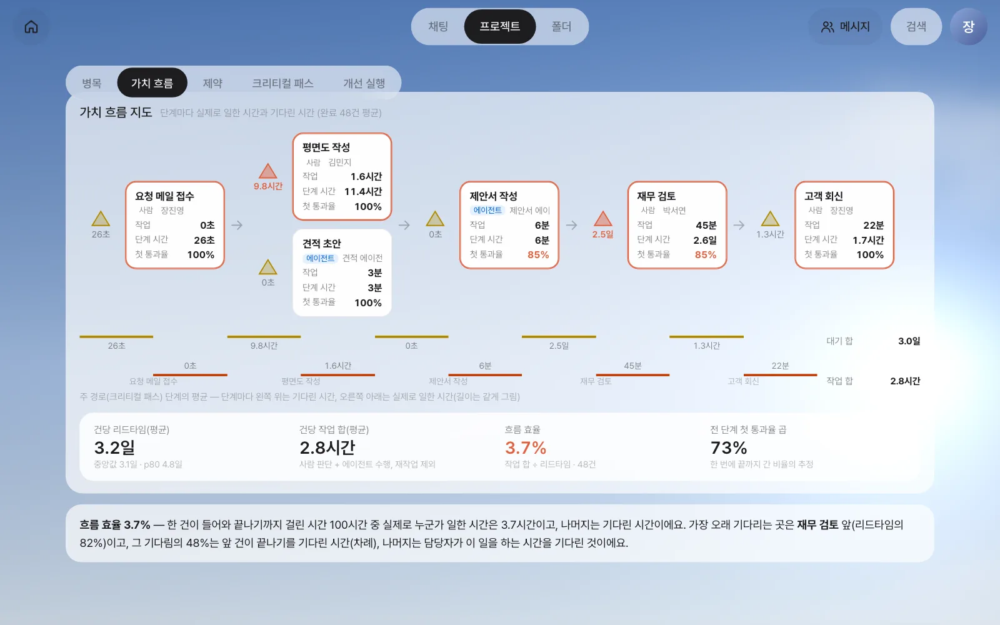
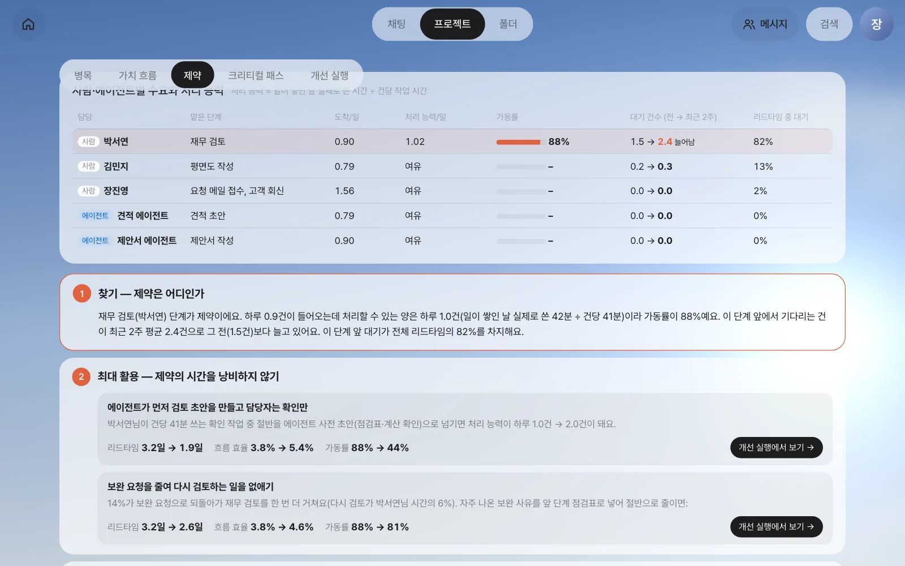
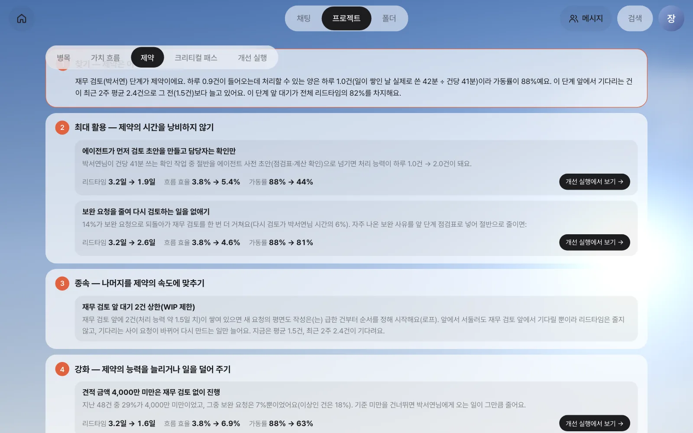
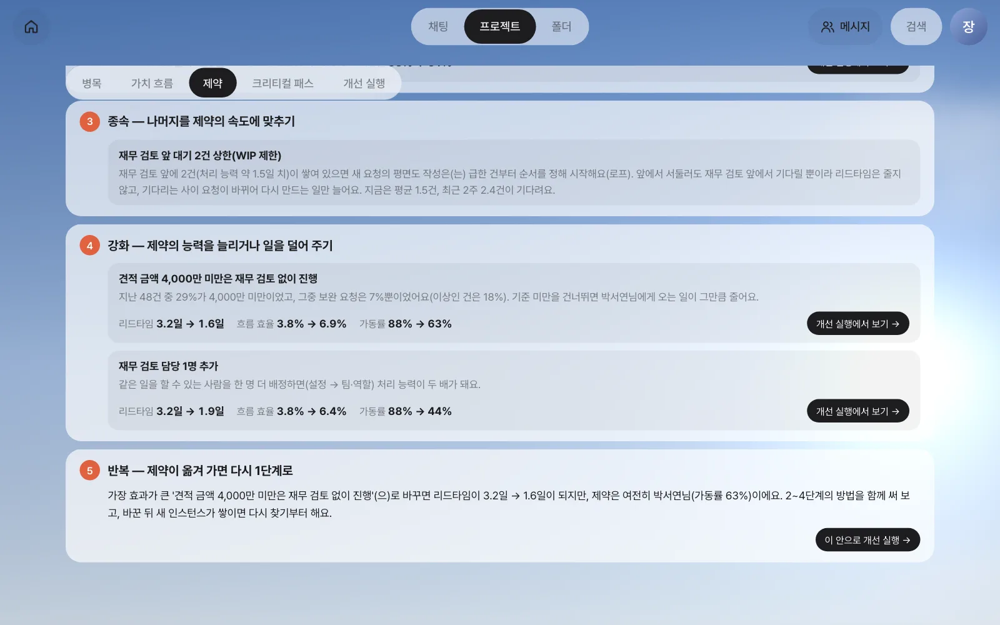

한 건이 들어와 끝나기까지 일한 시간과 기다린 시간을 한 장에 그리는 가치 흐름 지도로 흐름 효율을 재고, 제약 이론으로 전체 속도를 정하는 단 하나의 단계를 찾습니다. 그리고 제약 이론의 다섯 단계를 이 프로세스의 숫자로 채워 봅니다.
가치 흐름 — 일하는 시간과 기다리는 시간#
20장에서 재무 검토가 병목이라는 것을 찾았습니다. 이제 한 걸음 물러나 흐름 전체를 봅니다.
가치 흐름은 고객이 원하는 결과(여기서는 제안서와 견적서가 담긴 회신)가 만들어지기까지 거치는 모든 단계입니다. 단계마다 두 가지 시간이 있습니다.
| 시간 | 뜻 | 고객 입장 |
|---|---|---|
| 작업 시간 | 사람이나 에이전트가 실제로 산출물을 만드는 시간 | 값을 치를 만한 시간 |
| 대기 시간 | 일이 다음 사람 책상(또는 받은 편지함)에서 기다리는 시간 | 아무것도 더해지지 않는 시간 |
가치 흐름 지도(Value Stream Map)는 단계를 순서대로 늘어놓고 단계마다 작업 시간, 그 앞의 대기 시간, 한 번에 끝나는 비율을 적은 그림입니다. 제조업에서 시작했지만, 대기가 눈에 보이지 않는 사무 업무에서 특히 쓸모가 있습니다.
흐름 효율#
흐름 효율(flow efficiency)은 리드타임 중 실제로 일한 시간의 비율입니다.
흐름 효율 = Σ 작업 시간 ÷ 리드타임
예를 들어 한 건의 리드타임이 3일(72시간)이고 그동안 사람과 에이전트가 일한 시간을 모두 더하면 3시간이라면, 흐름 효율은 3 ÷ 72 ≈ 4%입니다. 사무 업무의 흐름 효율은 대개 5~15%라고 알려져 있습니다. 흐름 효율이 낮다는 것은 더 빨리 일하는 것보다 덜 기다리게 하는 편이 효과가 크다는 뜻입니다.
| 함께 보는 지표 | 뜻 |
|---|---|
| 첫 통과율 | 그 단계를 한 번에 통과한 건의 비율(수정 요청으로 되돌아오지 않음) |
| 전 단계 첫 통과율 곱 | 처음부터 끝까지 한 번도 되돌아가지 않고 갈 확률의 추정 |
| 단계 시간 | 단계에 도달해 끝날 때까지(대기 + 작업) |
따라 하기 1 — 가치 흐름 지도#
개선 화면에서 「가치 흐름」 탭을 엽니다.

| 읽을 곳 | 이 예제 |
|---|---|
| 상자 | 단계. 평면도 작성과 견적 초안은 동시에 하므로 위아래로 놓입니다. 주황 테두리는 주 경로(22장) |
| 상자 앞 삼각형 | 그 단계 앞에서 기다린 평균 시간. 재무 검토 앞이 2.5일로 가장 크고 빨갛습니다 |
| 첫 통과율 | 제안서 작성·재무 검토 85% — 일곱 건 중 한 건꼴로 수정 요청을 받습니다 |
| 사다리 | 주 경로 단계의 대기(위)와 작업(아래). 대기 합 3.0일, 작업 합 2.8시간 |
아래 합계가 핵심입니다.
| 건당(평균) | 값 |
|---|---|
| 리드타임 | 3.2일 (중앙값 3.1일, p80 4.8일) |
| 작업 합 | 2.8시간 (사람 판단 + 에이전트 수행, 재작업 제외) |
| 흐름 효율 | 3.7% |
| 전 단계 첫 통과율 곱 | 73% |
대기도 두 종류
지도 아래 설명에는 재무 검토 앞 대기의 절반쯤(48%)이 차례 기다림이라고 나옵니다. 박서연이 먼저 받은 다른 건을 아직 끝내지 못해서 기다린 시간입니다. 나머지는 담당자 기다림, 즉 박서연이 이 일을 하는 시간대(오전 한 시간 남짓)가 올 때까지 기다린 시간입니다. 차례 기다림은 일이 덜 몰리면 줄지만, 담당자 기다림은 일하는 방식을 바꿔야 줄어듭니다. 이 구분은 22장의 미리 계산에 그대로 쓰입니다.
제약 이론 — 사슬은 가장 약한 고리만큼 강하다#
제약 이론(Theory of Constraints, TOC)은 엘리야후 골드랫이 제안한 생각입니다. 여러 단계가 이어진 일의 전체 속도는 가장 느린 한 단계(제약)가 정합니다. 다른 단계를 아무리 빠르게 해도 제약 앞에 일이 더 쌓일 뿐 전체는 빨라지지 않습니다.
제약을 찾을 때 보는 숫자는 셋입니다.
| 숫자 | 뜻 | 이 화면에서 |
|---|---|---|
| 도착(수요) | 하루에 그 사람에게 오는 일의 수 | 평일 하루 평균 도착 건수 |
| 처리 능력 | 하루에 그 사람이 이 일을 끝낼 수 있는 수 | 일이 쌓여 있던 날 실제로 쓴 시간 ÷ 건당 작업 시간 |
| 가동률 | 도착 ÷ 처리 능력 | 100%에 가까울수록 위험 |
처리 능력을 사람이 입력하지 않고 기록에서 읽는 점이 중요합니다. 박서연은 재무 검토만 하는 사람이 아닙니다. 그래서 “하루 8시간 ÷ 건당 41분”이 아니라, 일이 쌓여 있어 쉬지 않고 했어야 할 날(정오에 기다리던 건이 저녁 6시에도 시작되지 않은 날)에 실제로 이 일에 쓴 시간을 처리 능력으로 봅니다.
가동률이 높으면 대기가 폭발한다#
가동률과 대기는 직선이 아닙니다. 대기열 이론에 따르면 대기는 대략 가동률 ÷ (1 − 가동률)에 비례합니다.
| 가동률 | 가동률 ÷ (1 − 가동률) | 50%일 때보다 |
|---|---|---|
| 50% | 1 | 1배 |
| 80% | 4 | 4배 |
| 88% | 7.3 | 7배 |
| 95% | 19 | 19배 |
일이 조금만 더 몰려도 대기가 몇 배로 늘어납니다. 반대로, 제약의 가동률을 조금만 낮춰도 대기가 크게 줄어듭니다.
따라 하기 2 — 제약 찾기#
「제약」 탭을 엽니다. 위의 표는 사람과 에이전트마다 수요와 처리 능력입니다.

| 담당 | 맡은 단계 | 도착/일 | 처리 능력/일 | 가동률 | 대기 건수(전 → 최근 2주) | 리드타임 중 대기 |
|---|---|---|---|---|---|---|
| 박서연 | 재무 검토 | 0.90 | 1.02 | 88% | 1.5 → 2.4 (늘어남) | 82% |
| 김민지 | 평면도 작성 | 0.79 | 여유 | – | 0.2 → 0.3 | 13% |
| 장진영 | 요청 메일 접수, 고객 회신 | 1.56 | 여유 | – | 0.0 → 0.0 | 2% |
| 견적·제안서 에이전트 | 견적 초안, 제안서 작성 | 0.79·0.92 | 여유 | – | 0 | 0% |
“여유”는 일이 쌓여 있던 날이 거의 없어 처리 능력이 한계에 닿은 적이 없다는 뜻입니다. 박서연만 가동률이 88%이고, 앞에 기다리는 건이 최근 2주에 늘고 있습니다. 10월 들어 요청이 늘면서 처리 능력에 거의 닿은 것입니다. 제약은 재무 검토(박서연)입니다.
다섯 단계 — 찾기 → 최대 활용 → 종속 → 강화 → 반복#
제약 이론은 제약을 다루는 순서를 다섯 단계로 정합니다. 화면 아래에 이 프로세스의 숫자로 채운 다섯 단계가 있습니다. 행동마다 붙은 “리드타임 3.2일 → 1.9일” 같은 효과는 22장의 미리 계산으로 낸 값입니다.

| 단계 | 뜻 | 이 프로세스에서 |
|---|---|---|
| 1. 찾기 | 제약이 어디인지 정한다 | 재무 검토(박서연). 도착 하루 0.9건, 처리 능력 1.0건, 가동률 88%, 리드타임의 82%가 이 앞의 대기 |
| 2. 최대 활용 | 제약의 시간을 한 순간도 낭비하지 않는다 | ① 에이전트가 먼저 검토 초안(계산·단가 점검)을 만들고 박서연은 확인만: 3.2일 → 1.9일 ② 보완 요청을 줄여 다시 검토하는 일 없애기(14%가 되돌아감, 박서연 시간의 6%): 3.2일 → 2.6일 |
| 3. 종속 | 나머지를 제약의 속도에 맞춘다 | 재무 검토 앞 대기 2건 상한(WIP 제한 — 진행 중인 일의 수에 상한을 둠): 쌓여 있으면 새 요청의 평면도 작성은 급한 건부터 순서를 정해 시작 |
| 4. 강화 | 제약의 능력을 늘리거나 일을 덜어 준다 | ① 견적 금액 4,000만 미만은 재무 검토 없이: 3.2일 → 1.6일 ② 재무 검토 담당 1명 추가: 3.2일 → 1.9일 |
| 5. 반복 | 제약이 옮겨 가면 다시 1단계로 | 가장 효과가 큰 안을 해도 제약은 여전히 박서연(가동률 63%) — 2~4단계를 함께 쓰고, 바꾼 뒤 다시 찾는다 |

몇 가지를 짚어 둡니다.
- 최대 활용이 강화보다 먼저입니다. 사람을 더 뽑기(강화) 전에, 지금 있는 제약의 시간을 확인에만 쓰게(최대 활용) 하는 것이 싸고 빠릅니다. 에이전트 사전 초안이 바로 그 방법입니다.
- 종속(WIP 제한)은 리드타임을 줄이지 않습니다. 앞에서 서둘러 봐야 제약 앞에서 기다릴 뿐이라는 것을 받아들이고, 기다리는 사이 요청이 바뀌어 다시 만드는 일을 줄입니다. 그래서 효과 숫자가 없습니다.
- 기준 미만 건너뛰기의 근거가 기록에 있습니다. 지난 48건 중 4,000만 미만이 29%였고, 그 건들의 보완 요청률은 7%로 기준 이상(18%)보다 훨씬 낮았습니다. 작은 건은 재무 검토가 결과를 거의 바꾸지 않았다는 뜻입니다.
- 반복은 이 화면을 다시 여는 것입니다. 개선 뒤 새 인스턴스가 쌓이면 제약이 김민지(평면도 작성)로 옮겨 갈 수도 있습니다.
AI 전환(AX) 컨설팅의 흐름과 같습니다
진단(20장의 분해) → 가치 흐름(이 장의 지도) → 병목(제약) → 에이전트·자동화(사전 초안·자동화) → 프로세스 재설계(22장의 개선 적용) 순서가 AI 전환 컨설팅 과정의 흐름 그대로입니다. 마지막 변화관리는 사람의 몫입니다 — 기준을 바꾸면 재무 담당과 제안팀이 합의해야 합니다.
다음 장으로#
제약은 재무 검토(박서연)이고, 다섯 단계에 따른 개선 후보도 나왔습니다. 다음 장에서는 전체 기간을 정하는 단계의 사슬(크리티컬 패스)을 보고, 후보를 실제로 바꾸기 전에 리드타임이 얼마나 줄지 미리 계산한 뒤, 고른 안을 새 버전으로 적용해 봅니다(22장).
확인 문제
- 어떤 프로세스의 건당 리드타임이 5일(120시간)이고 작업 합이 6시간입니다. 흐름 효율은 얼마일까요? 작업을 절반으로 줄이는 것과 대기를 절반으로 줄이는 것 중 리드타임에 더 큰 영향은 무엇일까요?
- 김민지의 처리 능력이 “여유”로 나오는 이유는 무엇일까요? 김민지가 하루에 할 수 있는 양이 무한하다는 뜻일까요?
- 제약이 박서연인데 평면도 작성을 에이전트로 자동화하면 리드타임은 어떻게 될까요? 제약 이론으로 설명해 보세요.
답
- 6 ÷ 120 = 5%. 작업을 절반으로 줄이면 3시간이 줄고, 대기를 절반으로 줄이면 57시간이 줍니다. 대기를 줄이는 편이 훨씬 큽니다.
- 일이 쌓여 있던 날(정오에 기다리던 건이 저녁에도 시작되지 않은 날)이 거의 없어, 처리 능력이 한계에 닿은 기록이 없기 때문입니다. 무한하다는 뜻이 아니라 “지금 수요로는 모자란 적이 없다”는 뜻입니다.
- 조금 줄지만(평면도는 주 경로에 있으므로 그 몇 시간만큼) 크게 줄지 않습니다. 평면도가 빨리 끝나도 제안서는 박서연 앞에서 기다리기 때문입니다. 제약이 아닌 곳의 개선은 제약 앞의 대기로 바뀔 뿐입니다. 22장의 미리 계산으로 직접 확인할 수 있습니다.